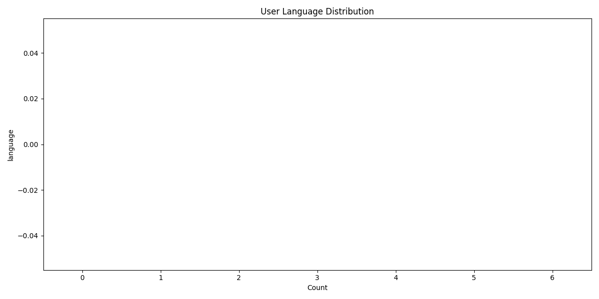
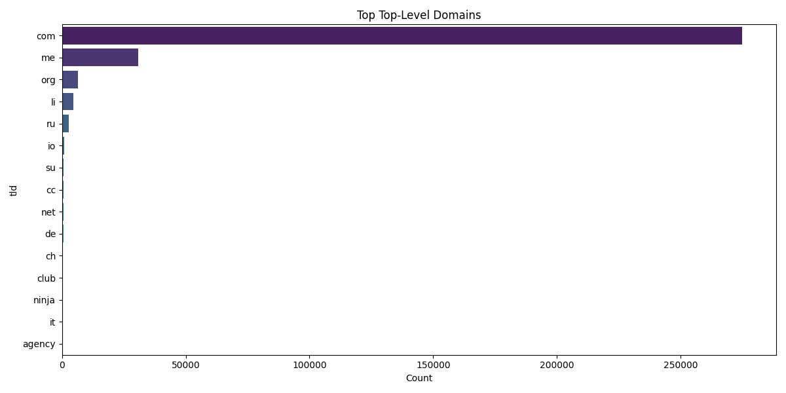
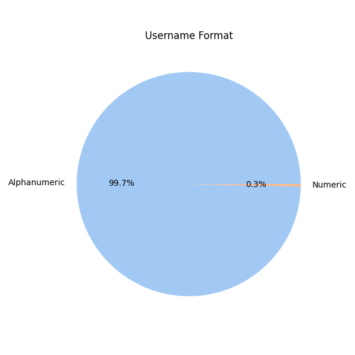

BreachForums Analysis
Secure, Aggregate Analysis of the User Database
Registration Growth

Monthly user registrations over time.
Password Algorithm Used

Distribution of hashing algorithms.
Language Distribution
Top user-selected languages.
Timezone Distribution

User self-reported timezones.
Top Email Domains

Most common email providers.
Top TLDs
Top Level Domain distribution (.com, .ru, etc).
Username Length

Distribution of username lengths.
Username Type
Numeric vs Alphanumeric usernames.
Analysis Report & Findings
1. Executive Summary
In 2022/2023, BreachForums, a major cybercrime forum, experienced a significant data breach resulting in the public leak of its database. This event is noteworthy due to the forum's role in facilitating cybercriminal activities and the sensitive nature of the data involved. Our analysis of the leaked data, sourced from Resecurity and the public leak (databoose.sql), was conducted with an ethics-first approach. We prioritized privacy and security by avoiding the publication of raw data and focusing solely on safe aggregate metrics. This report presents our findings, which offer insights into user behavior, security practices, and demographic distribution within the BreachForums community.
2. Methodology
To ensure the safe handling of the leaked data, we employed a rigorous methodology:
- Data Isolation: The SQL dump was parsed into a Docker-based MySQL environment, ensuring complete isolation from other systems.
- Data Cleaning: We cleaned the schema, focusing on TEXT columns, and deduplicated records to maintain data integrity.
- Aggregation: Using SQL INT queries, we generated aggregate statistics (e.g., counts, GROUP BY) and exported these as CSV files.
- Visualization: The aggregated data was visualized using Python to facilitate analysis without exposing any personally identifiable information (PII).
3. Data Analysis Findings
User Growth (Registration Trends)
The registration data indicates significant growth in user numbers over time, with notable spikes in certain months. For instance, there was a substantial increase in new user registrations in April 2024 (24,758 users), followed by a decrease in subsequent months. This pattern suggests periodic surges in forum interest or activity.
Security Posture (Password Algorithms)
The analysis of password algorithms reveals that all users in the dataset utilized the Argon2i algorithm, a modern and secure choice for password hashing. This indicates a strong default security configuration for the MyBB forum software used.
Demographics (Timezones/Languages)
The timezone distribution shows a concentration of users in UTC+0, with significant representation across various timezones, indicating a global user base. The language data, though limited, suggests a diverse community with widespread participation.
Anomaly Detection
- Email Domains: The prevalence of email domains such as gmail.com (240k+ users) and proton.me (29k+ users) highlights a preference for mainstream and privacy-focused email services. Lesser-known domains like cock.li and onionmail.org suggest attempts to maintain anonymity.
- Usernames: The majority of usernames are alphanumeric (322,912), with a small subset being purely numeric. The distribution of username lengths, peaking at 8 characters, indicates a tendency towards relatively short usernames.
4. Conclusion
The BreachForums community is characterized by rapid user growth, a strong security posture with modern password hashing, and a global, diverse demographic. Users exhibit a preference for privacy-centric email services and demonstrate a range of behaviors in username selection. This analysis provides valuable insights into the structure and dynamics of the community, emphasizing the importance of ethical data handling and privacy protection in cyber threat intelligence research.